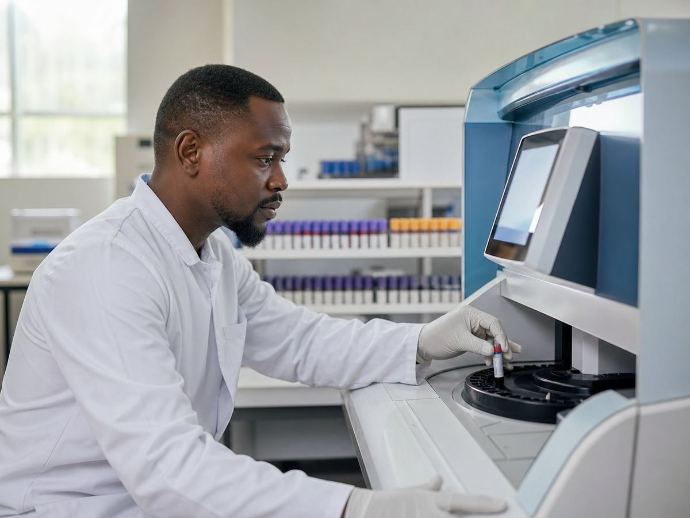
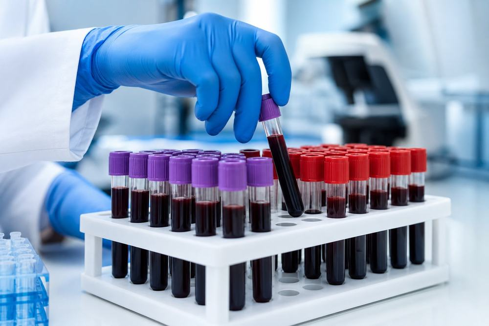

Ce qu'il faut préparer avant de venir, les examens que nous faisons, et le rendez-vous confirmé sur WhatsApp. Vous arrivez au bon moment, préparé.
What to prepare before you come, the tests we run, and your appointment confirmed on WhatsApp. You arrive at the right time, prepared.
« Docteur, je dois venir à jeun ? » — elle mérite une réponse écrite, pas une explication au téléphone pendant qu'on tient un tube. Voici l'essentiel avant de vous déplacer.
"Doctor, do I need to come fasting?" — that deserves a written answer, not an explanation over the phone while holding a tube. Here is what matters before you travel.
Ces indications sont générales : elles ne remplacent pas la consigne de votre médecin. En cas de doute, écrivez-nous avant de vous déplacer — nous répondons sur WhatsApp.
This is general guidance: it does not replace your doctor's instructions. If in doubt, message us before travelling — we answer on WhatsApp.
Si votre examen n'apparaît pas ici, écrivez-nous avant de venir : nous vous dirons tout de suite s'il est possible, et sinon où aller.
If your test isn't listed here, message us before coming: we'll tell you straight away whether we can do it, and if not, where to go.
Numération, formule, plaquettes. Pas besoin d'être à jeun.
Count, formula, platelets. No fasting needed.
Glycémie, cholestérol, triglycérides — à jeun.
Glucose, cholesterol, triglycerides — fasting required.
Créatinine, urée, transaminases, bilirubine.
Creatinine, urea, transaminases, bilirubin.
Hépatites, VIH, syphilis, typhoïde, paludisme.
Hepatitis, HIV, syphilis, typhoid, malaria.
Thyroïde, fertilité, bilan hormonal féminin.
Thyroid, fertility, female hormone panel.
Test de grossesse, groupe sanguin, suivi biologique.
Pregnancy test, blood group, biological follow-up.
Examen de selles, recherche de parasites intestinaux.
Stool examination, intestinal parasite screening.
Prélèvement adapté aux nourrissons et jeunes enfants.
Sampling adapted for infants and young children.
Écrivez le nom de l'examen sur WhatsApp — la réponse arrive vite.
Send the test name on WhatsApp — the answer comes quickly.

Les analyses courantes sont traitées sur place. Ce qui doit être confié à un plateau spécialisé est annoncé clairement — et le délai est dit à l'avance, pas découvert après trois jours d'attente.
Routine tests are processed on site. Anything that needs a specialised bench is stated clearly — and the turnaround is given upfront, not discovered after three days of waiting.
Un résultat n'est pas une machine qui imprime un chiffre. Il est relu, et une valeur qui sort de l'ordinaire est signalée — pas laissée à votre interprétation devant un papier que personne ne vous explique.
A result isn't a machine printing a number. It is read again, and a value out of the ordinary is flagged — not left for you to interpret alone on a sheet nobody explains.
Votre cas est discuté au laboratoire — passez pendant les heures d'ouverture, ou écrivez-nous.
Your case is discussed at the laboratory — come during opening hours, or message us.

Vos résultats vous appartiennent : ils ne sont transmis qu'à vous, ou à la personne que vous désignez.
Your results belong to you: they are given only to you, or to the person you name.
Écrivez-nous sur WhatsApp avant de venir : nous vous confirmons l'heure et la préparation de votre examen. Vous pouvez aussi appeler le laboratoire au +237 699 98 54 66.
Message us on WhatsApp before coming: we'll confirm the time and how to prepare for your test. You can also call the laboratory on +237 699 98 54 66.
Cela dépend de l'examen : à jeun pour la glycémie et le bilan lipidique, sans obligation pour une numération ou une sérologie. Le détail est plus haut sur cette page — et si vous avez un doute, écrivez-nous.
It depends on the test: fasting for glucose and lipid panels, not required for a blood count or serology. The detail is higher up this page — and if you're unsure, message us.
Le délai dépend de l'examen et il vous est annoncé au moment du prélèvement. Vous êtes prévenu sur WhatsApp dès que le résultat est prêt — vous n'avez pas à repasser pour demander.
The turnaround depends on the test and is given to you when the sample is taken. You're told on WhatsApp as soon as the result is ready — you don't need to come back and ask.
Oui. Le laboratoire reçoit en français et en anglais, et cette page existe dans les deux langues — le bouton FR | EN est en haut.
Yes. The laboratory serves patients in French and English, and this page exists in both languages — the FR | EN switch is at the top.
Oui. Ils ne sont remis qu'à vous, ou à la personne que vous désignez explicitement. Aucune donnée médicale n'est collectée par cette page.
Yes. They are given only to you, or to the person you explicitly name. No medical data is collected by this page.